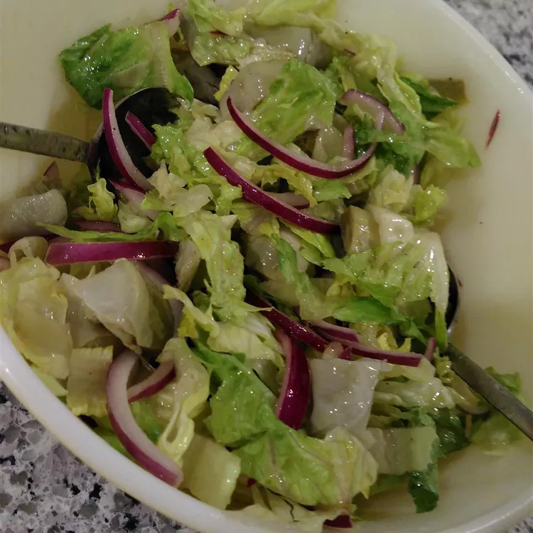

Description
This is a recipe from a St. Louis based pasta restaurant chain and I have served this many time to rave reviews. I always the double the recipe.
Ingredients
- 1 large head romaine lettuce- rinsed, dried and torn into bite sized pieces
- 1 large head iceberg - rinsed, dried and torn into bite sized pieces
- 1 (14 ounce) can artichoke hearts, drained and quartered
- 1 cup sliced red onion
- 1 (4 ounce) jar diced pimento peppers, drained
- ⅔ cup extra virgin olive oil
- ⅓ cup red wine vinegar
- 1 teaspoon salt
- ¼ teaspoon ground black pepper
- ⅔ cup grated Parmesan cheese
Steps
- In a large bowl, combine the romaine lettuce, iceberg lettuce, artichoke hearts, red onions and pimentos. Toss together.
- Prepare the dressing by whisking together the olive oil, red wine vinegar, salt, pepper and cheese. Refrigerate until chilled and pour over salad to coat. Toss and serve.